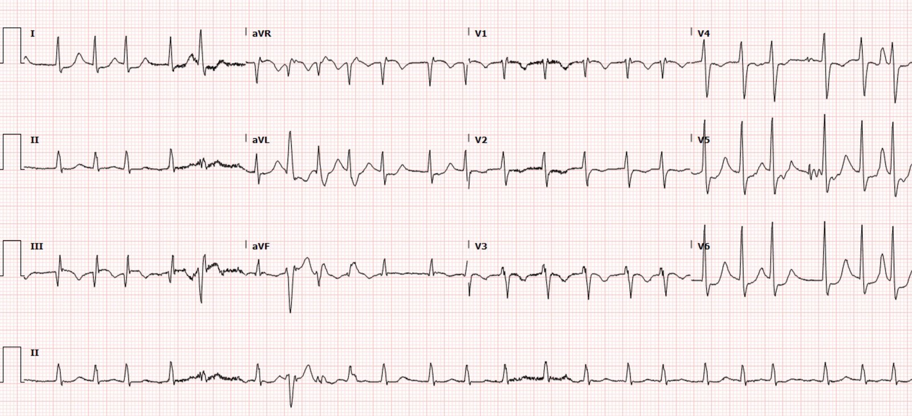
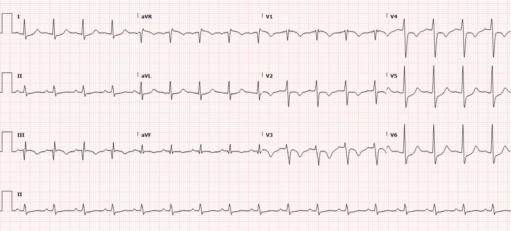
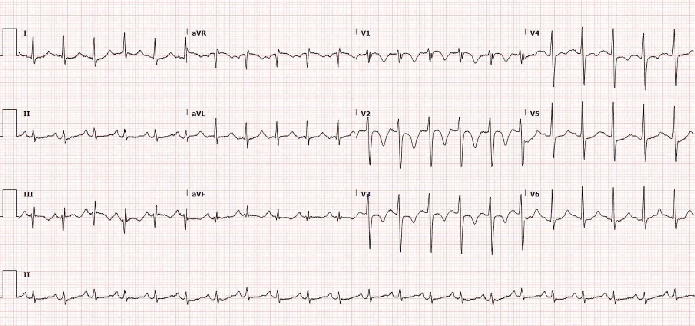
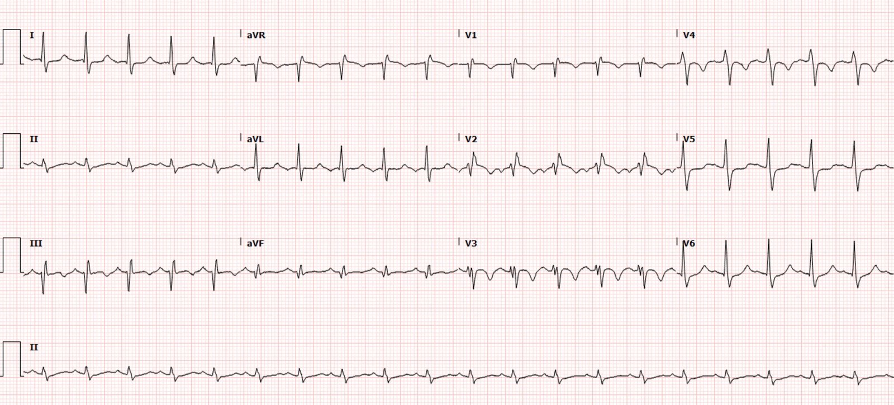
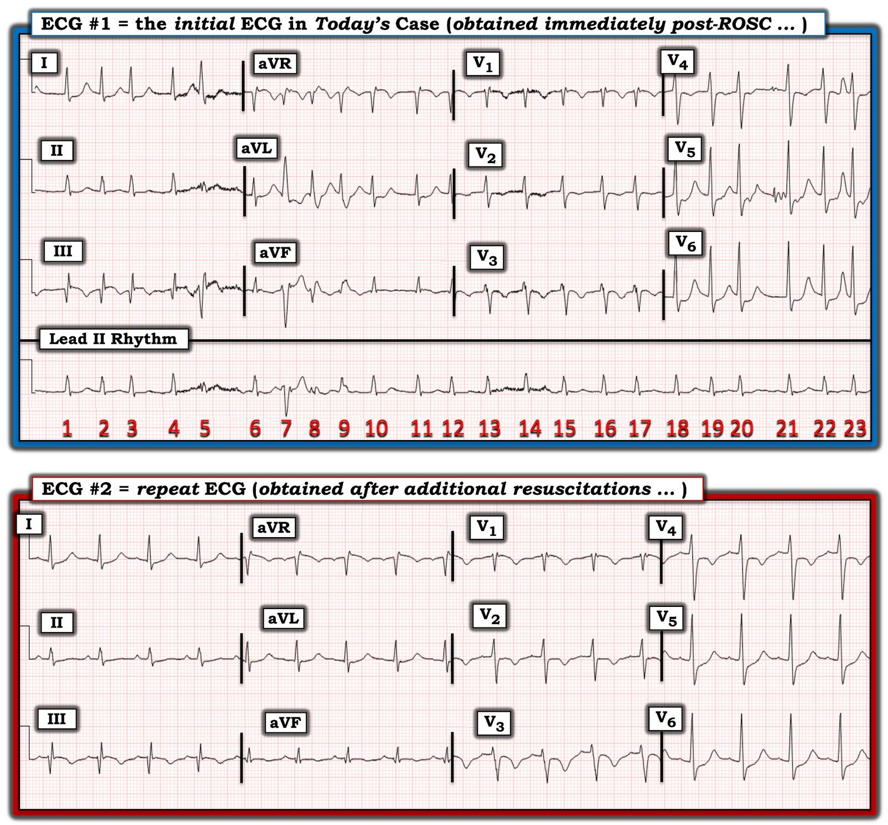

10/10/2022 — Một người đàn ông ngoài 30 tuổi ngừng tim và ST chênh lên (STE) trên điện tâm đồ sau ROSC
Bản dịch tiếng Việt của bài "A man in his 30s with cardiac arrest and STE on the post-ROSC ECG" – Dr. Smith’s ECG Blog. Giữ nguyên toàn bộ 6 hình ảnh của bản gốc.
Tác giả: Pendell Meyers và Peter Brooks MD
Một người đàn ông ngoài 30 tuổi, không có tiền sử bệnh lý đã biết, được kể lại là đột ngột đau ngực và khó thở tại nhà trước mặt gia đình. Theo lời kể, anh nói với gia đình “Tôi nghĩ mình đang bị nhồi máu cơ tim”, rồi gia đình lập tức chở anh đến khoa cấp cứu (ED); anh còn tự đi bộ được vào khu phân loại (triage) trước khi gục xuống và mất đáp ứng. Hồi sinh tim phổi (CPR) được bắt đầu ngay lập tức. Theo ghi nhận, đây là ngừng tim kiểu hoạt động điện vô mạch (PEA); không ghi nhận rung thất và không khử rung.
Đã tái lập tuần hoàn tự nhiên (ROSC) lần đầu, và trong lúc đó ghi được điện tâm đồ này:


Diễn giải của Meyers:
Đây là một bản diễn giải phức tạp, càng phức tạp hơn vì điện tâm đồ được ghi ngay sau ROSC. Nhịp là rung nhĩ. Phức bộ QRS trong giới hạn bình thường. Về thiếu máu cục bộ, có cả dấu hiệu thiếu máu cục bộ dưới nội tâm mạc (STD tối đa ở V5-V6 kèm STE soi gương ở aVR) VÀ dấu hiệu nhồi máu xuyên thành vùng thành dưới, với sóng Q và STE ở chuyển đạo III kèm STD soi gương ở I và aVL.
Như vậy, đây có vẻ là hình ảnh Aslanger (Aslanger’s Pattern) (OMI thành dưới với STE chỉ ở một chuyển đạo là III, đồng thời có thiếu máu cục bộ dưới nội tâm mạc). Cũng có STD ở V2-V4 (nhưng tối đa ở V5-V6). Nếu đây là ACS với hình ảnh Aslanger, vectơ ST chênh xuống của thiếu máu cục bộ dưới nội tâm mạc (do ACS đồng thời ở 3 nhánh mạch vành hoặc ở thân chung động mạch vành trái) hướng về chuyển đạo II (phía dưới và phía bên). Vectơ này triệt tiêu STE ở II và aVF, mà không ảnh hưởng đến chuyển đạo III. (Vectơ ST chênh xuống hướng xuống dưới của thiếu máu cục bộ dưới nội tâm mạc triệt tiêu thành phần hướng xuống dưới của vectơ STE ở tất cả các chuyển đạo thành dưới ngoại trừ chuyển đạo III, che giấu OMI.)
Như trong mọi diễn giải thiếu máu cục bộ có dấu hiệu OMI, các dấu hiệu này có thể do AMI típ 1 (ví dụ: nứt vỡ mảng xơ vữa mạch vành cấp và huyết khối) hoặc AMI típ 2 (có hoặc không có bệnh động mạch vành (CAD) cố định, với tình trạng mất cân bằng cung-cầu khu vực nặng nề, về cơ bản tương đương với dòng máu bằng không).
Ngoài tất cả những điều trên, còn có sóng T đảo ngược ở III và aVF, cũng như sóng T đảo ngược ở V2-V4. Theo kinh nghiệm của tôi, hình thái ở V2-V4 rất đặc hiệu cho tăng gánh tim phải cấp (có nhiều nguyên nhân tiềm năng, nhưng trong cấp cứu (EM) không nguyên nhân nào phổ biến và quan trọng hơn thuyên tắc phổi cấp).
Tôi đã gửi nó cho 2 đồng nghiệp "mê" điện tâm đồ mà hoàn toàn không kèm thông tin lâm sàng nào, và họ lập tức trả lời:
“Trông như rung nhĩ kèm thiếu máu cục bộ dưới nội tâm mạc và hình ảnh tăng gánh tim phải.”
“Tôi cũng định nói y như vậy.”
__________
Bình luận của Smith: Hầu như mọi ca ngừng tim có người chứng kiến do OMI hay bất kỳ ACS nào đều do rung thất, và chỉ khoảng 5% ca ngừng tim do thuyên tắc phổi là do rung thất. Khi chẩn đoán phân biệt trên điện tâm đồ nằm giữa một bên là OMI và bên kia là PE/OMI típ II, việc không có VT/VF ủng hộ mạnh cho PE.
Pulseless electrical activity with witnessed arrest as a predictor of sudden death from massive pulmonary embolism in outpatients (Hoạt động điện vô mạch trong ngừng tim có người chứng kiến như một yếu tố dự báo đột tử do thuyên tắc phổi diện rộng ở bệnh nhân ngoại trú)
Kết luận: bệnh nhân ngoại trú bị ngừng tim có người chứng kiến và PEA nguyên phát có xác suất cao bị thuyên tắc phổi diện rộng
________________
Ca bệnh tiếp diễn:
“Điện tâm đồ lúc ROSC ban đầu cho thấy hình ảnh có vẻ là rung nhĩ với ST chênh lên ở thành dưới, chênh xuống ở aVL, đáng lo ngại STEMI.”
Bệnh nhân bị ngừng tim nhiều lần, và mỗi lần đều tái lập được tuần hoàn tự nhiên.
“Việc đặt lại ống nội khí quản đã được xác nhận nhiều lần, nghe được tiếng thở hai bên, nhưng độ bão hòa O2 vẫn chỉ ở mức 50 đến 60 mấy phần trăm. Tôi đã nhìn thấy ống nội khí quản (ETT) đi qua dây thanh ở lần đặt đầu tiên, tuy nhiên do tình trạng giảm oxy máu kéo dài, tôi thấy tốt nhất nên thay ống để chắc chắn không có trục trặc bóng chèn hay nguyên nhân do điều trị gây ra làm O2 thấp. Tôi đã trao đổi với bác sĩ tim mạch về các dấu hiệu trên điện tâm đồ, và họ cho rằng lúc đó bệnh nhân không phải là đối tượng thông tim.”
Điện tâm đồ ghi lại:


Đây là hình thái PE kinh điển, với sóng T đảo ngược ở V1-V4 và cả ở chuyển đạo III
Siêu âm giới hạn tại khoa cấp cứu cho thấy thất phải giãn và huyết khối tĩnh mạch sâu (DVT) chi dưới phải.
“Quyết định bơm tPA được đưa ra sau khoảng 25 phút CPR, và khoảng 25 phút sau khi dùng tPA, độ bão hòa O2 tăng lên 97%, bệnh nhân không còn tím tái, chuyển sang nhịp xoang bình thường với sóng T đảo ngược ở thành trước bên kèm ST chênh xuống.”
“Sau tổng cộng khoảng 1 giờ CPR ngắt quãng, cuối cùng đã đạt ROSC….Bệnh nhân có cử động chi trong lúc đặt đường truyền tĩnh mạch trung tâm. Đang truyền epinephrine và norepinephrine…”
Chụp CT mạch máu cho thấy thuyên tắc phổi hình yên ngựa lan rộng.
Bệnh nhân được chuyển đến một trung tâm can thiệp, tại đó được nhóm ECMO, tim mạch, phẫu thuật mạch máu và phẫu thuật tim-lồng ngực đánh giá; các nhóm cùng quyết định không tiến hành ECMO và lấy huyết khối động mạch phổi ngay vì tiên lượng thần kinh chưa rõ. Ngày hôm sau, do chức năng thận xấu đi, ECMO tĩnh mạch-động mạch (VA ECMO) và lọc máu liên tục (CRRT) được bắt đầu.
Dưới đây là thêm vài điện tâm đồ trong giai đoạn này:




Bệnh nhân được duy trì ECMO trong 5 ngày, cải thiện và được rút ống thông ECMO, đồng thời ngừng CRRT. Bệnh nhân nằm viện gần 2 tháng, và theo ghi nhận đã hồi phục thần kinh hoàn toàn. Xét nghiệm tìm tình trạng tăng đông dương tính với kháng đông lupus. Bệnh nhân được kê apixaban.
Xem ca liên quan này;
Collapse, pulse present, ECG shows inferior OMI. Then there is loss of pulses with continued narrow complex on the monitor (“PEA arrest”) (Ngã gục, còn mạch, điện tâm đồ cho thấy OMI thành dưới. Sau đó mất mạch trong khi monitor vẫn còn phức bộ hẹp (“ngừng tim kiểu PEA”))
Xem các ca tăng gánh tim phải cấp khác của chúng tôi:
A man in his 40s with RUQ abdominal pain (Một người đàn ông ngoài 40 tuổi đau bụng hạ sườn phải)
A woman in her 50s with shortness of breath (Một phụ nữ ngoài 50 tuổi khó thở)
When the ECG is more revealing than the HPI (Khi điện tâm đồ nói lên nhiều hơn bệnh sử)
A crashing patient with an abnormal ECG that you must recognize (Một bệnh nhân đang suy sụp nhanh với điện tâm đồ bất thường mà bạn phải nhận ra)
A man in his 40s with a highly specific ECG (Một người đàn ông ngoài 40 tuổi với điện tâm đồ có tính đặc hiệu cao)
Chest pain, ST Elevation, and tachycardia in a 40-something woman (Đau ngực, ST chênh lên và nhịp nhanh ở một phụ nữ 40 mấy tuổi)
Repost: Syncope, Shock, AV block, RBBB, Large RV, “Anterior” ST Elevation in V1-V3 (Đăng lại: ngất, sốc, blốc AV, RBBB, thất phải lớn, ST chênh lên “thành trước” ở V1-V3)
A young woman with altered mental status and hypotension (Một phụ nữ trẻ rối loạn ý thức và tụt huyết áp)
An elderly woman transferred to you for chest pain, shortness of breath, and positive troponin – does she need the cath lab now? (Một phụ nữ cao tuổi được chuyển đến bạn vì đau ngực, khó thở và troponin dương tính – bà có cần vào phòng thông tim ngay không?)
A 30-something woman with chest pain and h/o pulmonary hypertension due to chronic pulmonary emboli (Một phụ nữ 30 mấy tuổi đau ngực, có tiền sử tăng áp phổi do thuyên tắc phổi mạn tính)
A 30-something with 8 hours of chest pain and an elevated troponin (Một người 30 mấy tuổi đau ngực 8 giờ và troponin tăng)
Syncope, Shock, AV block, Large RV, “Anterior” ST Elevation…. (Ngất, sốc, blốc AV, thất phải lớn, ST chênh lên “thành trước”….)
Dyspnea, Chest pain, Tachypneic, Ill appearing: Bedside Cardiac Echo gives the Diagnosis (Khó thở, đau ngực, thở nhanh, vẻ mặt bệnh nặng: siêu âm tim tại giường cho chẩn đoán)
31 Year Old Male with RUQ Pain and a History of Pericarditis. Submitted by a Med Student, with Great Commentary on Bias! (Nam 31 tuổi đau hạ sườn phải và có tiền sử viêm màng ngoài tim. Do một sinh viên y khoa gửi, kèm bình luận tuyệt vời về thiên kiến!)
Chest pain, SOB, Precordial T-wave inversions, and positive troponin. What is the Diagnosis? (Đau ngực, khó thở, sóng T đảo ngược ở chuyển đạo trước tim và troponin dương tính. Chẩn đoán là gì?)
Cardiac Ultrasound may be a surprisingly easy way to help make the diagnosis (Siêu âm tim có thể là một cách dễ dàng đến bất ngờ để giúp chẩn đoán)
Answer: pulmonary embolism. Now another, with ultrasound…. (Trả lời: thuyên tắc phổi. Giờ thêm một ca nữa, có siêu âm….)
This is a quiz. The ECG is nearly pathognomonic. Answer at bottom. (Đây là một câu đố. Điện tâm đồ gần như đặc hiệu chẩn đoán. Đáp án ở cuối bài.)
Chest Pain, SOB, anterior T-wave inversion, positive troponin (Đau ngực, khó thở, sóng T đảo ngược thành trước, troponin dương tính)
Anterior T wave inversion due to Pulmonary Embolism (Sóng T đảo ngược thành trước do thuyên tắc phổi)
Collapse, pulse present, ECG shows inferior OMI. Then there is loss of pulses with continued narrow complex on the monitor (“PEA arrest”) (Ngã gục, còn mạch, điện tâm đồ cho thấy OMI thành dưới. Sau đó mất mạch trong khi monitor vẫn còn phức bộ hẹp (“ngừng tim kiểu PEA”))
Những điểm cần học:
Ngừng tim đột ngột có người chứng kiến do ACS hầu như luôn do rối loạn nhịp. Nếu là PEA, thì hãy nghi ngờ một nguyên nhân khác như PE (và dĩ nhiên còn những nguyên nhân khác nữa)
Bạn phải học được hình ảnh điện tâm đồ của tăng gánh tim phải cấp thì mới chăm sóc tốt được những bệnh nhân PE đang hấp hối.
Điện tâm đồ phản ánh chính xác trạng thái sinh lý của cơ tim bên dưới, nhưng trạng thái sinh lý đó luôn có nhiều hơn một nguyên nhân có thể. Các dấu hiệu OMI trên điện tâm đồ (đại diện cho nhồi máu toàn bộ bề dày đang diễn ra) thường gặp nhất là do tắc mạch vành cấp từ ACS típ 1, nhưng có nhiều con đường khác dẫn đến cùng một trạng thái mất cân bằng cung-cầu gần như hoàn toàn, gây nhồi máu toàn bộ bề dày. Có lẽ thường gặp nhất là bệnh động mạch vành (CAD) cố định cộng với tình trạng sau ngừng tim gây tụt huyết áp và dòng chảy thấp qua tổn thương mạn tính, dẫn đến tổn thương xuyên thành thật sự nhưng sẽ thoái lui khi tưới máu bình thường được khôi phục.
Dù cần luyện tập mới học được những khác biệt trên điện tâm đồ giữa tăng gánh tim phải cấp và ACS (chẳng hạn các dấu hiệu tái tưới máu), việc phân biệt chúng trên lâm sàng lẽ ra không khó: Khi triệu chứng cấp tính và sóng T thành dưới/thành trước đảo ngược, bệnh nhân PE đang có triệu chứng rõ và bệnh nặng, với dấu hiệu tăng gánh tim phải cấp trên siêu âm; còn bệnh nhân LAD đã tái tưới máu thì đỡ hơn, thường đã hết đau, và siêu âm cho thấy thất phải bình thường và có thể có rối loạn vận động thành vùng LAD. Ngoài ra, ACS không gây giảm oxy máu không tương xứng với mức độ suy giảm huyết động, như PE có thể gây ra.
Nếu bạn dùng theo dõi CO2 cuối thì thở ra định lượng, thì không bao giờ cần mất thời gian để kiểm tra xem ống nội khí quản đã được đặt đúng vị trí hay chưa.

===================================
BÌNH LUẬN CỦA TÔI, bởi KEN GRAUER, MD (10/10/2022):
===================================
Ca hôm nay là một ca “Cứu sống”! Bệnh nhân này ngừng tim ngay sau khi đến bệnh viện. Anh được hồi sinh — nhưng sau đó ngừng tim tái phát nhiều lần, và lần nào cũng hồi sinh thành công. Diễn biến của anh vẫn phức tạp — nhưng thật đáng kinh ngạc, anh được xuất viện khoảng 2 tháng sau với tình trạng thần kinh nguyên vẹn!
Bác sĩ Brooks và Meyers nêu bật một số điểm quan trọng rút ra từ việc xử trí ca bệnh phức tạp này. Gồm có.
- Diễn giải điện tâm đồ sau hồi sức có thể cực kỳ khó khăn. Đó là vì rất thường gặp các dấu hiệu điện tâm đồ của thiếu máu cục bộ dưới nội tâm mạc lan tỏa ngay sau hồi sức (đó là lý do nhiều người khuyên nên chờ một khoảng thời gian ngắn [ ~15 phút] sau ROSC, rồi ghi lại điện tâm đồ để xem các thay đổi thiếu máu cục bộ có còn tồn tại không).
- Nhiều (nếu không nói là phần lớn) bệnh nhân sau khi được hồi sức thành công từ ngừng tim không tỉnh lại ngay. Do đó — bệnh sử thường sẽ bị giới hạn ở những gì đã biết trước khi ngừng tim.
- Nhịp nhanh, nhất là khi đi kèm AFib nhanh — nổi tiếng là gây ra ST chênh lên thoáng qua không do nhồi máu cấp (thường hết khi tần số tim chậm lại). Dĩ nhiên, nhịp nhanh rất thường gặp ở bệnh nhân sau ngừng tim.
- Giá trị của siêu âm tim khẩn (Stat Echo) tại khoa cấp cứu trong việc khẳng định nghi ngờ trên lâm sàng và điện tâm đồ về PE cấp không thể bị đánh giá quá cao! Trong ca hôm nay — việc phân biệt giữa OMI với PE cấp được thực hiện nhờ phát hiện thất phải lớn, giãn trên siêu âm tim.
Tôi tập trung bình luận vào việc Nhìn Lại LẦN NỮA 2 điện tâm đồ đầu tiên ghi được trong ca hôm nay. Để rõ ràng — tôi trình bày lại 2 bản ghi này trong Hình 1.


SUY NGHĨ CỦA TÔI về các điện tâm đồ trong Hình 1:
Như Bác sĩ Brooks và Meyers đã nêu — việc diễn giải điện tâm đồ #1 trở nên phức tạp bởi thực tế là nó được ghi ngay sau hồi sức.
- Nhịp là AFib nhanh. Như đã nói ở trên — không hiếm khi thấy ST chênh lên thoáng qua kèm AFib nhanh và hết khi tần số chậm lại. Liệu điều này có giải thích được ST chênh lên mà ta thấy ở chuyển đạo III của điện tâm đồ #1 hay không thì chưa chắc chắn nếu chỉ dựa vào một bản ghi duy nhất này.
- Hình dạng QRS của các nhát #5, 7, 8 và 9 rộng hơn, thay đổi, và khá khác so với hình dạng QRS của các nhát khác trên bản ghi này. Nhiều khả năng nhất các nhát này là nhát trên thất, được dẫn truyền với các mức độ lệch hướng kiểu RBBB và/hoặc LAHB khác nhau. Xét từ góc độ điện tâm đồ — các phức bộ rộng hơn và trông khác biệt này làm hạn chế số nhát mà ta có để đánh giá hình dạng sóng ST-T ở các chuyển đạo aVL và aVF.
- Chuyển đạo V2 trông “lạc lõng“ — vì phức bộ QRS đẳng điện và sóng T đảo ngược rất nông của nó trông chẳng hề giống hình dạng QRST ở cả hai chuyển đạo kế cận (tức là các chuyển đạo V1 và V3). Với tầm quan trọng mà ta đặt vào 3 chuyển đạo trước đầu tiên khi tìm “tăng gánh” thất phải — việc đặt sai vị trí chuyển đạo V2 rõ ràng cản trở việc đánh giá điện tâm đồ của chúng ta.
- Ngoài ra (như Bác sĩ Brooks và Meyers đã ghi nhận) — có ST chênh xuống ở tất cả các chuyển đạo bên (I, aVL; V5,V6) — kèm ST chênh lên ở chuyển đạo aVR.
- ĐIỀU CỐT LÕI: Điện tâm đồ #1 cho thấy AFib nhanh — với chẩn đoán phân biệt chính là giữa tăng gánh thất phải cấp (tức là có lẽ do PE cấp diện rộng, xét đến tình trạng trụy tim mạch đột ngột của bệnh nhân này) — với — hình ảnh Aslanger (tức là OMI thành dưới kèm thiếu máu cục bộ dưới nội tâm mạc đồng thời). Nhịp nhanh và tình trạng ngay sau hồi sức của bệnh nhân này có thể ảnh hưởng đến mức nào lên hình dạng và mức độ lệch của sóng ST-T (chênh lên và chênh xuống) là điều không thể biết nếu chỉ dựa vào một bản ghi duy nhất này.
Còn điện tâm đồ #2 thì sao?
Như đã nêu ở trên — siêu âm tim cho thấy thất phải giãn — siêu âm gợi ý DVT chi dưới — và oxy hóa cải thiện rõ rệt trong vòng 25 phút sau khi dùng TPA là những xét nghiệm đã gián tiếp khẳng định chẩn đoán PE diện rộng cấp. Dù vậy, xét từ góc độ đánh giá điện tâm đồ — tôi cho rằng điện tâm đồ #2 ủng hộ chẩn đoán PE diện rộng này nhiều hơn hẳn.
- Điện tâm đồ #2 cho thấy nhịp xoang đã được phục hồi. Tần số tim vẫn ~100/phút — nhưng rõ ràng là chậm hơn tần số của AFib nhanh thấy ở điện tâm đồ #1.
- Mặc dù ST dạng vòm (coving) ở chuyển đạo III vẫn còn trên điện tâm đồ #2 — rõ ràng có ít ST chênh lên hơn ở tần số chậm hơn này. ST chênh xuống soi gương ở chuyển đạo aVL cũng ít hơn. Những dấu hiệu điện tâm đồ này — cùng với việc không có các thay đổi tiến triển của OMI ở 2 chuyển đạo dưới còn lại — khiến tôi không nghĩ đến hình ảnh Aslanger kèm OMI.
- Chuyển đạo V2 trên điện tâm đồ #2 giờ trông “khớp” hơn nhiều — theo nghĩa là hình dạng và mức độ tương đối của sóng T đảo ngược giờ đã phù hợp hơn với những gì thấy ở các chuyển đạo kế cận. Thực tế, với bệnh sử lâm sàng này — hình ảnh điện tâm đồ tổng thể gồm ST dạng vòm kèm sóng T đảo ngược đối xứng ở các chuyển đạo V1 đến V4 giờ đây đủ để chẩn đoán “tăng gánh” thất phải cấp cho đến khi chứng minh được điều ngược lại.
- Mặc dù các thay đổi sóng ST-T của “tăng gánh” thất phải trên điện tâm đồ thường gặp nhất ở các chuyển đạo ngực phía trước — chúng cũng thường được thấy ở một hoặc nhiều chuyển đạo dưới. Trong bối cảnh này — sóng T đảo ngược mà ta thấy ở chuyển đạo III của điện tâm đồ #2 hoàn toàn phù hợp với “tăng gánh” thất phải.
Tổng hợp lại tất cả:
Như đã nói — việc đánh giá các điện tâm đồ trong ca hôm nay không hề đơn giản. Bệnh nhân này đã trải qua nhiều lần hồi sức — bản thân điều đó có thể giải thích một loạt bất thường điện tâm đồ. Nhưng bệnh sử trụy tim mạch đột ngột — cùng với các dấu hiệu trên điện tâm đồ #2 gồm nhịp nhanh xoang — chưa hẳn là S1Q3T3 (vì có một sóng lệch dương nhỏ ban đầu ở chuyển đạo III [ = “Không có Q, mà là sóng r ở chuyển đạo III]) — nhưng có hình ảnh RBBB không hoàn toàn (rSr’ ở chuyển đạo V1 kèm sóng s tận hẹp ở các chuyển đạo I và V6) — và hình dạng sóng ST-T kinh điển của “tăng gánh” thất phải ở các chuyển đạo V1 đến V4 đều nói lên rằng: “PE cấp diện rộng cho đến khi chứng minh được điều ngược lại!”
- LƯU Ý: Để tìm hiểu thêm về chẩn đoán “tăng gánh” thất phải cấp (và PE cấp) trên điện tâm đồ — Mời xem Bình luận của tôi ở cuối trang trong bài đăng ngày 28 tháng Ba năm 2022 trên Dr. Smith’s ECG Blog.